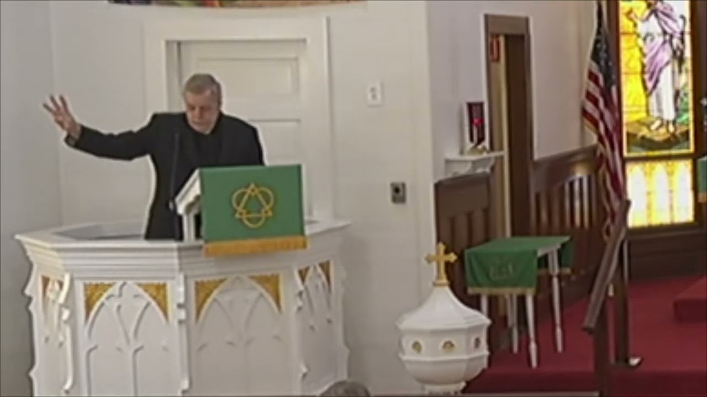
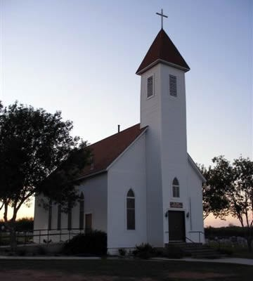
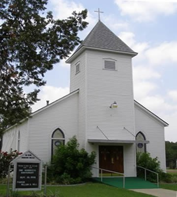

For more than a century, the people of St. John Lutheran Church in Westhoff and Lindenau have gathered to worship, care for one another, and carry out Christ’s mission in the Texas countryside.
Sunday Worship 9:00 a.m.
258 Schlinke Road · Cuero, Texas 77954
Holy Communion on the first Sunday of each month
Sunday Worship 10:30 a.m.
156 Cook Avenue · Westhoff, Texas 77994
Holy Communion on the first Sunday of each month
If you are looking for a spiritual home in the northwestern DeWitt County area, we have two possibilities for you to consider — St. John Lutheran Church in Westhoff, and St. John Lutheran Church in Lindenau.
For over one hundred years, both churches have served the Lord through a rich legacy of faith and rural tradition. Since 1969 our two congregations have shared pastors and ministerial resources — two churches joined in one ministry.
Both are places where people come to worship and share the love and grace of our Savior, Jesus Christ — where committed Christians genuinely care for one another and are active in carrying out Christ’s mission. We would love for you and your family to join our families and share the warmth of our worship and the friendliness of our members.

Sunday worship at St. John Lutheran — Westhoff, Texas
“For where two or three are gathered in my name, I am there among them.”Matthew 18:20
Fourteen miles apart in the farm and ranch country of DeWitt County stand two white-steepled churches, each with more than one hundred and twenty years of history.

Founded by German farm families in 1902, the Lindenau congregation worshiped in homes and the community schoolhouse before dedicating its steepled sanctuary in 1913 — services were held in German until 1955.
Our Lindenau Story
Born in a dance hall in 1908 with five charter members, the Westhoff congregation held early services in saloons and under an oak tree before raising the church that still stands on Cook Avenue today.
Our Westhoff StoryCan’t make it to church this Sunday? Our worship services are recorded and shared on YouTube each week, so you can hear the Word wherever you are — and see what worship with us is like before you visit.
Lindenau at 9:00 a.m. — Westhoff at 10:30 a.m. Come as you are; leave as family.
Plan Your Visit